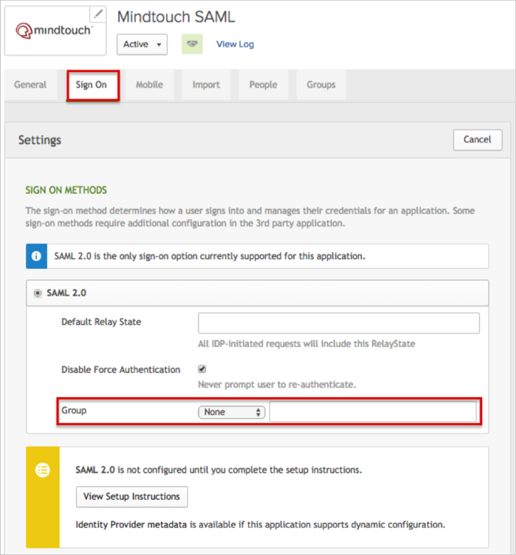
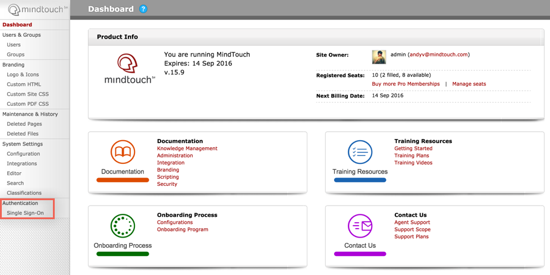
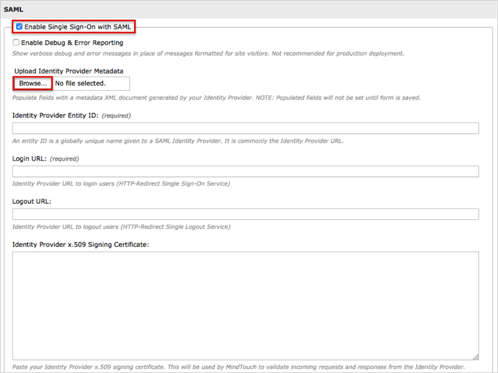
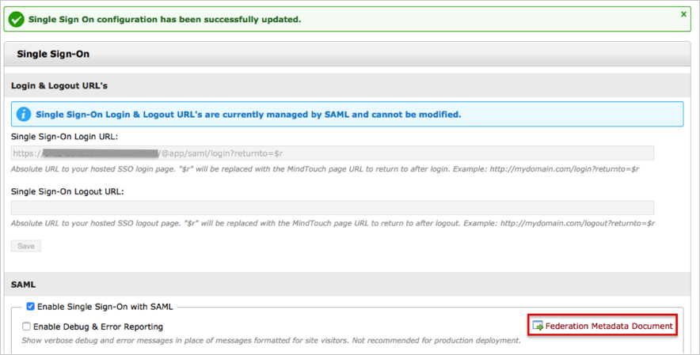
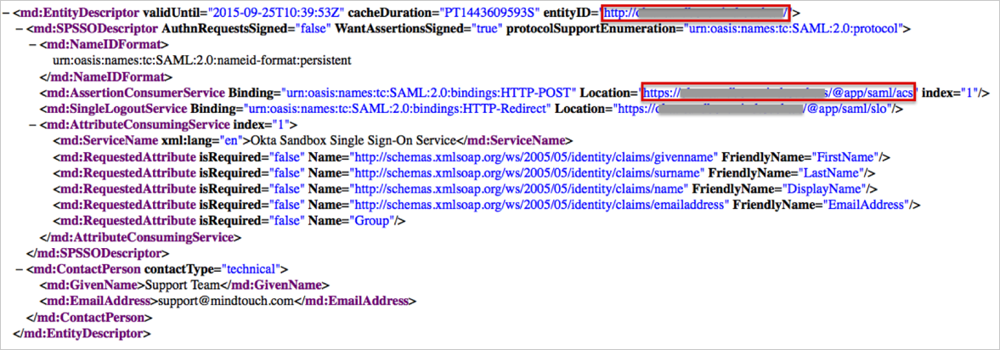
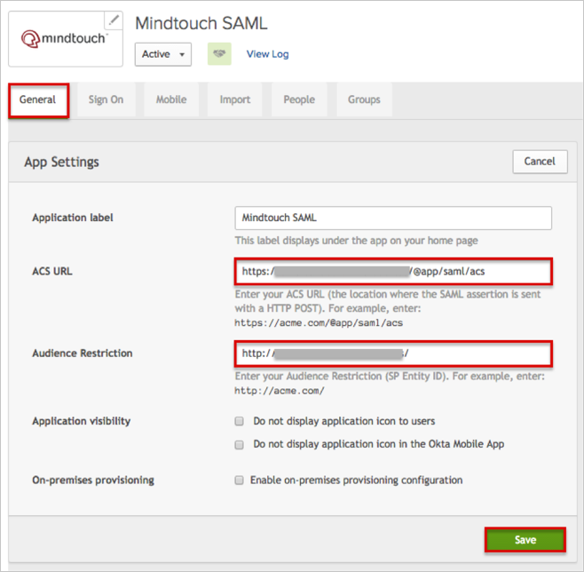

The MindTouch application is pre-configured to pass the Groups as part of the SAML assertion. In order to be able to send Groups, your Okta organization needs to have the following feature flag turned on:
Once this feature flag is turned on, make sure that the Group option is available for the application (Sign On tab):

Copy, then save the following IDP Metadata file as metadata.xml
Sign in to Okta Admin app to have this variable generated for you.
Sign in to your MindTouch account as Administrator.
Click the Site tools icon in the top right menu, then select Control Panel from the dropdown menu.
From the Dashboard select Authentication > Single Sign-On.

Enter the following:
Check the Enable Single Sign-On with SAML box.
Upload Identity Provider Metadata: Click Browse to locate the metadata.xml file you saved in step 1, then upload the file.

Continue by entering:
NameID Format: Select urn:oasis:names:tc:SAML:2.0:nameid-format:persistent.
Group List Attribute: Enter Group
Note that this step is optional, use if you need to send Okta Groups as part of the SAML assertion - see additional instructions in step 11, below.
Click Save.

After saving, click the Federation Metadata Document link:

Once the Federation Metadata Document opens, locate and make a copy of the SP Entity ID and ACS URL values, as shown i the example below:

In Okta, select the General tab for the MindTouch app, then click Edit.
Enter the values you just saved from the Federation Metadata Document into the Audience Restriction (SP Entity ID) and ACS URL fields, then click Save:

Optional: If you need to send Okta Groups as part of SAML Assertion, you need to complete the following:
In Okta, select the Sign On tab for the MindTouch app, then click Edit.
Select your preferred Group filter from the Group dropdown menu, then click Save:

Done!
Notes:
IdP-initiated flows, SP-initiated flows, and Just In Time (JIT) provisioning are all supported.
For SP-initiated flows go to the MindTouch app base URL.